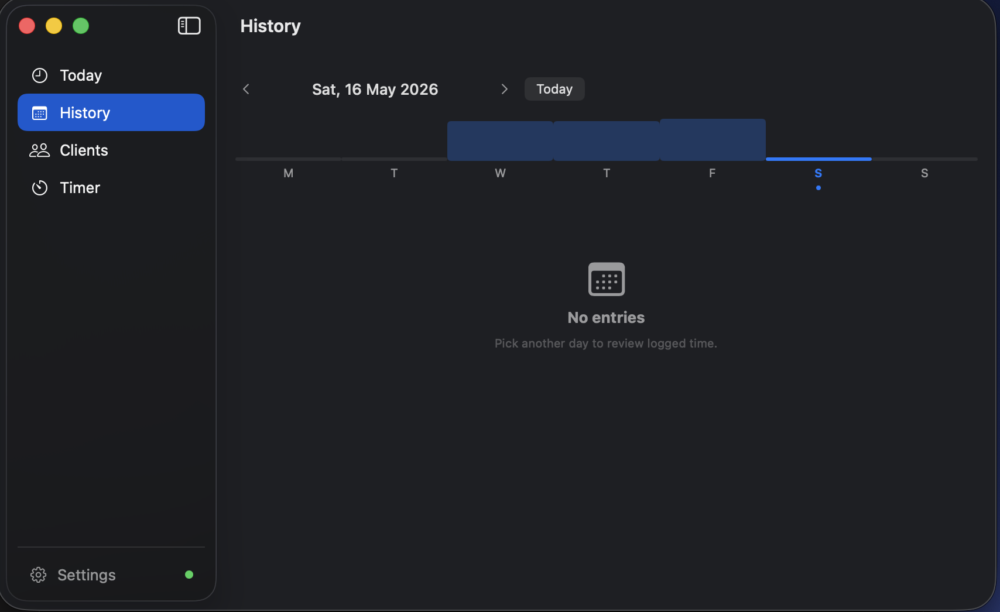
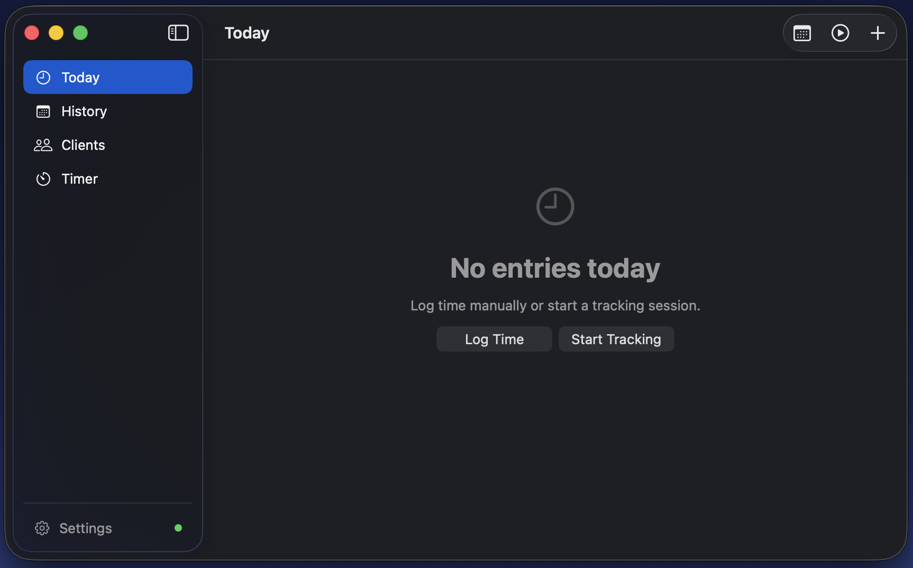
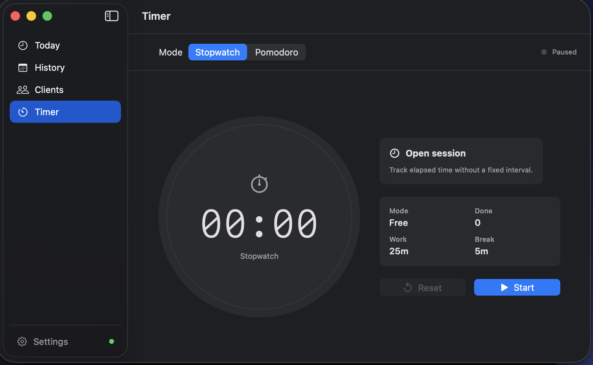

iOS & macOS
A lightweight time-tracking app built with SwiftUI and SwiftData. Sync across devices via a self-hosted middleware on Vercel — zero cloud lock-in, zero subscription.
iPhone & iPad
Full-featured mobile app with real-time session tracking, Live Activity on your lock screen and Dynamic Island, and automatic sync at every launch.
macOS 14+
Native macOS app that lives in your menu bar. Always visible, never in the way — with a full window for deep work sessions and client management.
In Action
Every pixel follows the macOS HIG. No Electron, no web views — just SwiftUI rendering on Metal.



Highlights
Built for developers and freelancers who want a native app — not another Electron wrapper or subscription SaaS.
Tap once to start a session. Duration is logged automatically when you stop. Multiple sessions can run simultaneously.
Configurable focus and break intervals with a ring progress view and lock-screen notification when a phase ends.
Data entered on Mac arrives on iPhone automatically. Push and pull via a tiny Vercel middleware you host yourself.
Active sessions and the running timer appear live in your Dynamic Island and on the lock screen via ActivityKit.
All credentials live exclusively in the system Keychain. No analytics, no third-party SDKs, no data leaves your infrastructure.
Assign colors to each client. Projects inherit the client palette and collapse cleanly when archived.
The Today view sums all sessions in real time. See exactly how much time went to each client without doing the math.
Configure a daily reminder to start tracking, and a threshold alert if a session is still open past your end-of-day time.
The iOS app uses only first-party Apple frameworks — no CocoaPods, no SPM cloud packages, no Electron.
Architecture
A tiny Vercel serverless function sits between your iPhone and MongoDB Atlas. You own the infra, you own the data.
Pure URLSession, zero external dependencies. Pulls at every launch, pushes changes with a 2-second debounce. Credentials auto-loaded from a gitignored bundle file.
Direct connection to MongoDB Atlas. Connection string stored in Keychain, never in code or UserDefaults. Auto-push on every SwiftData save, with 2-second debounce.
Two serverless functions — GET /api/pull and POST /api/sync. Auth via X-API-Key header. Full Swagger UI at your deployment URL. Runs on the free tier.
Stack
No Electron, no React Native, no subscriptions. Just Swift and Apple frameworks the way they were designed to be used.
Download
Download the latest DMG, drag it to Applications, and you're done. No App Store, no account required.
.dmg, then drag Timelog.app into your Applications folder.